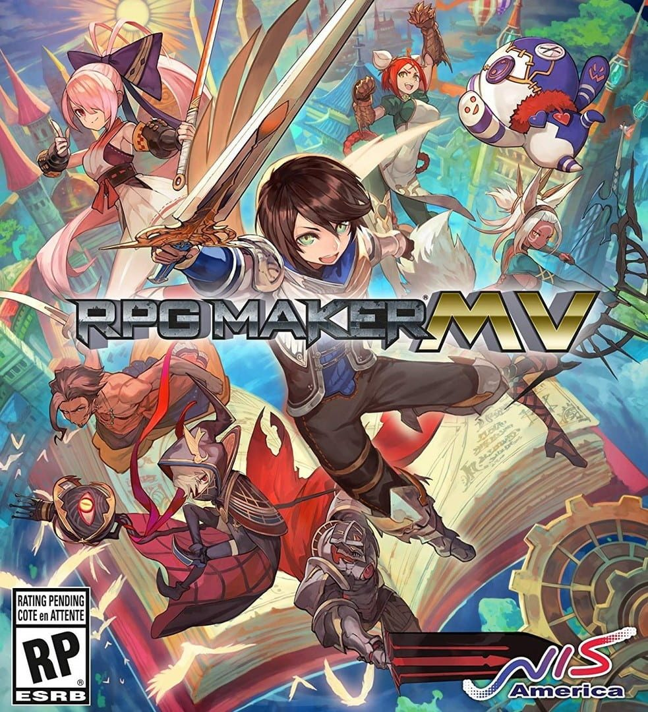

RPG Maker MV
RPG Maker MV
Details
|  | |
| Spielzeit | 10d 9h 54m 0s |
| Letzte Aktivität | 02.08.2020 2:54:07 |
| Hinzugefügt | 19.12.2019 |
| Modifiziert | 12.12.2022 1:29:36 |
| Fertigstellungsstatus | Gespielt |
| Bibliothek | Steam |
| Quelle | Steam |
| Plattform | PC (Windows) |
| Veröffentlichungsdatum | 23.10.2015 |
| Community Bewertungen | 80 |
| Kritiker Punkte | 65 |
| Benutzerwertung | |
| Genre | 🎬 Utilities |
| Entwickler | KADOKAWA Yoji Ojima |
| Verleger | Degica |
| Eigenschaft | Steam Karten Workshop |
| Links | Community Hub Discussions News Store Page PCGamingWiki |
| Tag | 2D Action RPG Anime Design & Illustration Game Development GameMaker JRPG Multiplayer Nudity Pixel Graphics RPG RPGMaker Sexual Content Single Player Software Web Publishing |
Beschreibung
Your opinion matter!
Please let us know what you thought of RPG Maker MV.
Survey here :
https://goo.gl/forms/sJCXCbWfcx8txHGf2
About the Software
POWERFUL enough for a developer SIMPLE enough for a child VERSATILE enough for any platform!
For years, RPG Maker has been the easiest way to make your own Windows PC Roleplaying game. We have strived to give everyone, regardless of experience or skill level, the tools to make a game they could be proud of. Now, with RPG Maker MV, your game isn't just on Windows PC, its on the move. Make your game on your Windows or OS X PC, and then deploy it for iOS, Android, Windows, OS X, or even to play in a browser using HTML5!MAKE GAMES FOR THE PLATFORMS YOU WANT FROM ANY PC
RPG Maker MV can run on both Windows and Mac OS X PCs. Users can also export games for the following platforms:- Windows/EXE
- MacOSX/APP
- Android/APK
- iOS/IPA
- HTML 5 for Web Browsers